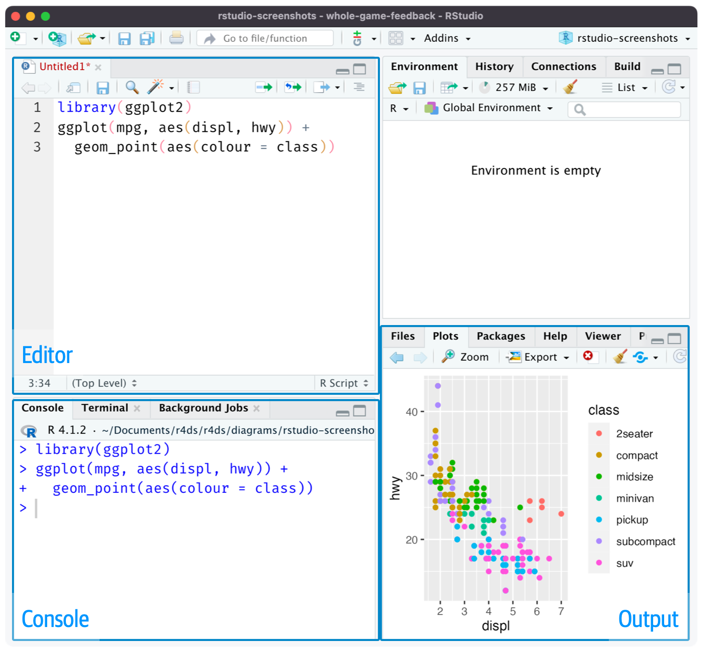
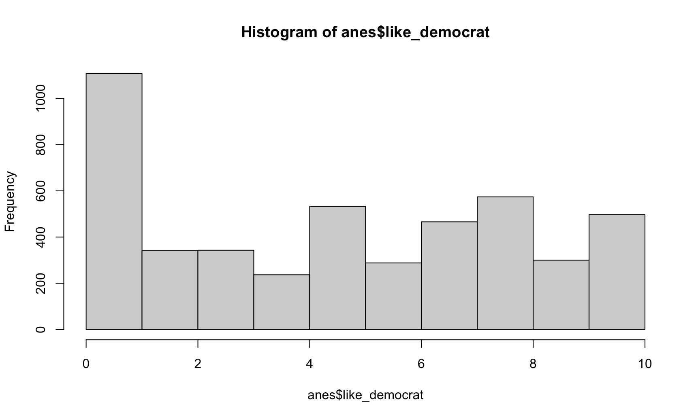
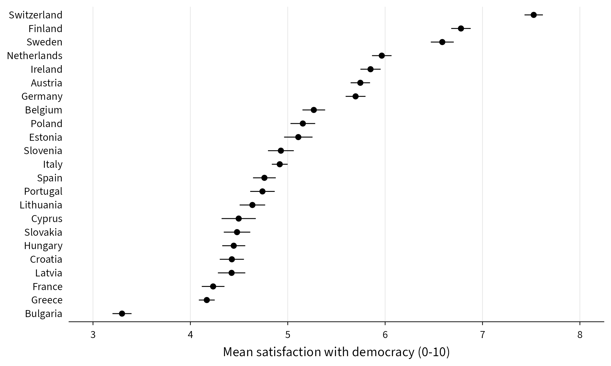

install.packages("usethis")
usethis::use_blank_slate()Introduction to Quantitative Methods · Sciences Po
19 November 2026
By the end you should have
The idea of this session

Figure: Wickham et al., R for Data Science (2e), CC BY-NC-ND 3.0
R does the statistics. RStudio is where you write it.
> ready, + unfinished lineA good folder structure (example):
labexam/
├── labexam.Rproj ← double-click this
├── data/
│ ├── anes_….csv
│ └── ess.csv
├── output/
└── Lastname_Firstname.Rlabexam.Rproj automatically makes this folder the working directory.read.csv("data/ess.csv") then works on any computer, without setwd().By default, RStudio saves everything in memory to .RData when you quit and loads it again next time. Yesterday’s objects come back, and a script can seem to work only because of them.
Tools > Global Options > General:
Or run this once in the Console:
install.packages("usethis")
usethis::use_blank_slate()Your script is what counts. To test it: Session > Restart R (Cmd+Shift+0 on a Mac, Ctrl+Shift+F10 on Windows), then run everything from the top.
Install the packages once, in the Console (not in the script):
install.packages(c("dplyr", "lmtest", "car", "margins", "nnet"))| Pattern | Read it as | Example |
|---|---|---|
name <- value |
“name gets value” | x <- c(3, 7, 10) |
function(arguments) |
“do this, with these settings” | mean(x, na.rm = TRUE) |
dataset$var |
“the column var of dataset” | dataset$agea |
ifelse() is Excel’s IF() for every row
0 1 2 3 4 5 6 7 8 9 10 <NA>
1318 775 2005 3522 3339 11259 3360 3711 2852 928 1371 5074
useNAcontrols if the table includes counts ofNAvalues: the allowed values correspond to never ("no"), only if the count is positive ("ifany") and even for zero counts ("always"). (?table)The default is
"no", which would hide the 5,074 newNAs.
NA makes the result NA
install.packages("car") |
downloads it, once per computer |
library(car) |
loads it, in every session |
car::vif(model) |
uses one function without library()
|
If R says could not find function "vif", load the package with library(car).
If it says there is no package called 'car', install it first.
Base R functions such as mean, lm and t.test are always available.
Base R, as in the labs:
dplyr, with the native pipe |> (“then”):
dataset <- dataset |>
mutate(
age_cat = case_when(
age <= 30 ~ 0,
age <= 60 ~ 1,
age >= 61 ~ 2
)
)The Lab 3 solution writes the older pipe %>% (from the magrittr package), which does the same here. Both versions give the same variable. Wajd: “THEY WORK THE SAME WAY, so use whichever one you prefer.” Base R is closer to the lab scripts, which helps on Tuesday.
y ~ x means “y explained by x”The same formula works in five functions from the labs:
# means by group
aggregate(lrscale_clean ~ gndr, data = dataset, FUN = mean)
# difference of means
t.test(lrscale_clean ~ gndr, data = dataset)
# figure
boxplot(lrscale_clean ~ gndr, data = dataset)
# regression
lm(lrscale_clean ~ age + factor(gndr) + edu, data = dataset)
# logistic regression (y01 is a 0/1 dummy variable)
glm(y01 ~ age + factor(gndr), data = dataset, family = binomial)
+adds a predictor.*adds two predictors and their interaction.
factor(): numbers that are labels (Intercept) factor(gndr)2
5.2665148 -0.2946513 gndr codes 1 = male and 2 = female, so the numbers are categories, not amounts.factor(gndr)2 compares women with men. Men are the reference: the first level, which gets no row of its own.factor(cntry) adds one dummy per country, compared with AT (first in alphabetical order). These are the country fixed effects.mean(anes$like_democrat, na.rm = TRUE)[1] 4.87644median(anes$like_democrat, na.rm = TRUE)[1] 5sd(anes$like_democrat, na.rm = TRUE)[1] 3.405986Given that the mean and the median are very close, the distribution of the rating of the Democratic Party is approximately symmetric. The standard deviation means that ratings typically lie about 3.4 points from the mean, which is large compared with the mean: the spread of the distribution is thus large.
hist(anes$like_democrat)
The bars show the shape that the mean and median describe. The first bar counts the 0s and the 1s together; breaks = seq(-0.5, 10.5, by = 1) gives one bar per value.
aggregate(like_democrat ~ voted_2024, data = anes, FUN = mean) voted_2024 like_democrat
1 0 4.373077
2 1 4.949704Non-voters: 4.37. Voters: 4.95. There is therefore a difference in the means, suggesting an association between voting and the rating of the Democratic Party in this sample.
The t-test checks whether it holds in the population.
cor(anes$like_democrat, anes$age, use = "complete.obs")[1] 0.02571812There is a positive, negligible association between age and the rating of the Democratic Party: age makes almost no difference to it.
Strength: |r| below 0.10 negligible, from 0.10 weak, 0.30 moderate, 0.50 strong, 0.75 very strong.
t.test(swd ~ voted_2024, data = anes)
Welch Two Sample t-test
data: swd by voted_2024
t = 8.2327, df = 1056.3, p-value = 5.355e-16
alternative hypothesis: true difference in means between group 0 and group 1 is not equal to 0
95 percent confidence interval:
0.3044511 0.4949929
sample estimates:
mean in group 0 mean in group 1
2.973077 2.573355 The difference is statistically significant at the 0.01 level: we reject the null hypothesis that the means are not different. Voters (lower score) are more satisfied.
tab <- table(anes$swd_binary, anes$voted_2024)
round(prop.table(tab, margin = 2) * 100, 1)
0 1
0 46.8 30.9
1 53.2 69.1chisq.test(tab)
Pearson's Chi-squared test with Yates' continuity correction
data: tab
X-squared = 71.87, df = 1, p-value < 2.2e-16The association is statistically significant at the 0.01 level: we reject the null hypothesis of no association. Direction: 69% of voters are satisfied, 53% of non-voters.
Estimate Std. Error t value Pr(>|t|)
(Intercept) 5.51740 0.062060 88.90 0.00e+00
age 0.00297 0.000674 4.40 1.07e-05
factor(gndr)2 -0.30219 0.024287 -12.44 1.85e-35
edu -0.03021 0.003079 -9.81 1.07e-22 Estimate Std. Error t value Pr(>|t|)
age 0.00332 0.000671 4.94 7.8e-07
factor(gndr)2 -0.32567 0.024067 -13.53 1.3e-41
edu -0.02744 0.003167 -8.67 4.7e-18bptest(m_fe)
studentized Breusch-Pagan test
data: m_fe
BP = 1356, df = 25, p-value < 2.2e-16We reject the null hypothesis of homoskedasticity (statistically significant at the 0.01 level), so there is heteroskedasticity: the variance of the residuals is not the same across the values of the dependent variable.
The course’s quick fix: robust standard errors.
vif(m_fe) GVIF Df GVIF^(1/(2*Df))
age 1.071270 1 1.035022
factor(gndr) 1.006579 1 1.003284
edu 1.140503 1 1.067944
factor(cntry) 1.106917 22 1.002311All the VIFs are close to 1 (at most 1.14), well below 10, so multicollinearity is not a concern.
For factor(cntry), read the last column, GVIF^(1/(2*Df)).
factor AME SE z p lower upper
age 0.0010 0.0001 9.2588 0.0000 0.0008 0.0012
edu -0.0029 0.0005 -5.7969 0.0000 -0.0039 -0.0019
gndr2 -0.0458 0.0039 -11.7849 0.0000 -0.0534 -0.0382summary(logit)): only its sign. Women’s is negative, so women are less likely to place themselves on the far right.lr3: left (0-3), centre (4-6), right (7-10), recoded as in Lab 5.
(Intercept) age factor(gndr)2 edu
2 Centre 1.523 -0.002 -0.026 -0.039
3 Right 0.658 0.004 -0.375 -0.038Each row compares a category with Left, the reference. Only the signs: women are less likely to be on the right rather than the left (-0.37).
edu factor(gndr)2:edu
-0.02166119 -0.01074850 cf["edu"] + cf["factor(gndr)2:edu"] # the education slope for women edu
-0.03240969 Men (reference): edu. Women: edu + interaction. The interaction is statistically significant at the 0.10 level only: weak evidence that gender moderates the effect of education.
Parameter | Coefficient | SE | 95% CI | t(33941) | p
-------------------------------------------------------------------------
(Intercept) | 5.52 | 0.06 | [ 5.40, 5.64] | 88.90 | < .001
age | 2.97e-03 | 6.74e-04 | [ 0.00, 0.00] | 4.40 | < .001
gndr [2] | -0.30 | 0.02 | [-0.35, -0.25] | -12.44 | < .001
edu | -0.03 | 3.08e-03 | [-0.04, -0.02] | -9.81 | < .001
Uncertainty intervals (equal-tailed) and p-values (two-tailed) computed
using a Wald t-distribution approximation.Coefficients, 95% confidence intervals and p-values in one table. One install for all of easystats: install.packages("easystats") (easystats.github.io).
Effect sizes were labelled following Cohen's (1988) recommendations.
The Welch Two Sample t-test testing the difference of swd by voted_2024 (mean
in group 0 = 2.97, mean in group 1 = 2.57) suggests that the effect is
positive, statistically significant, and medium (difference = 0.40, 95% CI
[0.30, 0.49], t(1056.34) = 8.23, p < .001; Cohen's d = 0.51, 95% CI [0.38,
0.63])A useful check of your own sentence. It labels effect sizes with Cohen’s d (“medium”), which the course doesn’t use: report the significance level and the direction in the course’s terms.
Warning: Heteroscedasticity (non-constant error variance) detected (p < .001).check_collinearity(m_fe)# Check for Multicollinearity
Low Correlation
Term VIF VIF 95% CI adj. VIF Tolerance Tolerance 95% CI
age 1.07 [1.06, 1.08] 1.04 0.93 [0.92, 0.94]
factor(gndr) 1.01 [1.00, 1.03] 1.00 0.99 [0.97, 1.00]
edu 1.14 [1.13, 1.15] 1.07 0.88 [0.87, 0.89]
factor(cntry) 1.11 [1.09, 1.12] 1.00 0.90 [0.89, 0.91]The same results as bptest() and vif(), with the conclusion spelled out: heteroskedasticity, and no multicollinearity.
compare_performance(m, m_fe, metrics = c("R2", "R2_adj"))# Comparison of Model Performance Indices
Name | Model | R2 | R2 (adj.)
--------------------------------
m | lm | 0.009 | 0.009
m_fe | lm | 0.033 | 0.032Without (m) and with (m_fe) country fixed effects: the countries raise R² from 0.009 to 0.033.
We fitted a linear model to predict lrscale_clean with age, gndr and edu. The
model's explanatory power is very weak (R2 = 8.61e-03, adj. R2 = 8.52e-03). The
model's intercept is at 5.52 (95% CI [5.40, 5.64]). Within this model:
- The effect of age is statistically significant and positive (beta = 2.97e-03,
95% CI [1.65e-03, 4.29e-03], t(33941) = 4.40, p < .001, Std. beta = 0.02)
- The effect of gndr [2] is statistically significant and negative (beta =
-0.03, 95% CI [-0.04, -0.02], t(33941) = -9.81, p < .001, Std. beta = -0.13)
- The effect of edu is statistically significant and negative (beta = -0.30,
95% CI [-0.35, -0.25], t(33941) = -12.44, p < .001, Std. beta = -0.05)Compare with summary(): women’s coefficient is -0.30 and education’s -0.03. report() swaps the two. Tools make mistakes too: check every number against summary() before you use it.
| Message | Usually means |
|---|---|
object 'x' not found |
a typo, wrong capitals, or the line that creates x hasn’t run |
could not find function |
the package isn’t loaded |
unexpected symbol / ')'
|
a missing comma, quote or bracket |
result is NA
|
missing values: add na.rm = TRUE
|
grouping factor must have exactly 2 levels |
the t.test group doesn’t have exactly two values: check it with table()
|
replacement has 0 rows |
the column doesn’t exist, often after a wrong import |
Start with the last line of the message, then try ?function. If you’re still stuck, give the AI your code together with the error.
table(dataset$lrscale_clean, useNA = "ifany")
0 1 2 3 4 5 6 7 8 9 10 <NA>
1318 775 2005 3522 3339 11259 3360 3711 2852 928 1371 5074 NA left: the recode worked.table(old, new, useNA = "ifany") shows where each old code ended up.summary(x): a maximum of 99 or 999 is a missing-value code.nobs(model): the number of rows the model used.| Element | What it is | For an R question |
|---|---|---|
| Instruction | “a specific task or instruction you want the model to perform” | fix this error; explain this output |
| Context | “external information or additional context that can steer the model to better responses” | base R as in the labs; the variable codes from table()
|
| Input data | “the input or question that we are interested to find a response for” | your code and the full error message |
| Output indicator | “the type or format of the output” | one sentence per line of code |
“You do not need all the four elements for a prompt and the format depends on the task at hand.”
Source: DAIR.AI, Prompt Engineering Guide, “Elements of a Prompt”
The model makers’ own guides go further:
What you do with the answer:
| What | Works with | |
|---|---|---|
| 1 | Chat in the browser, copy and paste | any account |
| 2 | A desktop app opened on labexam/, which reads your files and runs R |
ChatGPT app (Codex); Claude app, Code tab (paid plan) |
| 3 | Inside RStudio: Posit Assistant, Agent engines, Codex Agent | ChatGPT sign-in, plus one terminal step |
| 4 | Posit Assistant with Posit AI Pass | $5 for the first month, then $20 a month |
The AI setup page has the steps. Give an agent only the project folder, and read every change it makes.

Figure: Mean satisfaction with democracy by country, with 95% confidence intervals. Data: European Social Survey, round 11 (unweighted).
| (1) | (2) | |
|---|---|---|
| * p < 0.1, ** p < 0.05, *** p < 0.01 | ||
| OLS. Dependent variable: left-right self-placement (0 = left, 10 = right). Standard errors in parentheses. | ||
| Age (years) | 0.003*** | 0.003*** |
| (0.001) | (0.001) | |
| Woman | -0.302*** | -0.326*** |
| (0.024) | (0.024) | |
| Education (years) | -0.030*** | -0.027*** |
| (0.003) | (0.003) | |
| Observations | 33,945 | 33,945 |
| R² | 0.009 | 0.033 |
| Country fixed effects | No | Yes |
Made with the modelsummary package, which also writes Word and LaTeX tables.
Expect the steps from the labs, applied to variables you haven’t seen: inspect, clean, check, describe, test, model, and interpret each result in your own words.
To keep learning: R for Data Science (free online), the Posit cheat sheets, and this guide.
| Function | What it does | Example from the labs | Watch out |
|---|---|---|---|
install.packages() |
downloads a package, once per computer | install.packages("car") |
in the console, not in the exam script |
library() |
loads a package for this session | library(car) |
every session; the stats package is always loaded |
getwd() |
shows the working directory | getwd() |
with a project it’s the project folder |
list.files() |
lists the files in a folder | list.files("data") |
the exact file name to use |
read.csv() |
imports a comma-separated file | read.csv("data/ess.csv") |
path relative to the project |
read.csv2() |
imports a semicolon-separated file | read.csv2("students.csv") |
use one of the two, not both |
names() |
the variable names | names(dataset) |
|
dim(), nrow()
|
rows × columns | dim(dataset) |
rows = respondents |
head() |
the first rows | head(dataset) |
|
str() |
the type of each variable | str(dataset) |
chr = text, int/num = numbers |
| Function | What it does | Example from the labs | Watch out |
|---|---|---|---|
table() |
counts each value | table(dataset$V242065) |
add useNA = "ifany" to see NA
|
summary() |
min, quartiles, mean, max | summary(dataset$agea) |
a max of 999 is a code |
unique(), sort()
|
the distinct values | sort(unique(dataset$lrscale)) |
|
ifelse() |
if-then for every row | ifelse(x %in% c(77, 88, 99), NA, x) |
ifelse(condition, yes, no) |
%in% |
“is one of” | x %in% c(1, 2, 3) |
|
==, !=, >=, &, |
|
compare, AND, OR | x >= 0 & x <= 10 |
== compares, = sets an argument |
NA |
missing value | ifelse(..., x, NA) |
no quotes: "NA" is text |
is.na() |
TRUE where missing | sum(is.na(dataset$age)) |
x == NA doesn’t work |
x[condition] <- value |
change only the matching rows | d$cat[d$x <= 3] <- 1 |
Lab 5’s 3-category recode |
factor() |
treat numbers as categories | factor(gndr) |
first level = reference |
subset() |
keep the matching rows | subset(dataset, cntry == "FR") |
text needs quotes |
mutate() + case_when()
|
dplyr recode | Lab 3 solution | needs library(dplyr)
|
| Function | What it does | Example from the labs | Watch out |
|---|---|---|---|
mean(), median(), sd()
|
centre, spread | mean(x, na.rm = TRUE) |
without na.rm → NA
|
prop.table() |
turns counts into proportions | prop.table(table(x, y), 1) * 100 |
1 = row %, 2 = column % |
round() |
rounds | round(x, 1) |
halves round to even |
hist() |
histogram | hist(dataset$like_democrat) |
for a 0 to 10 scale: breaks = seq(-0.5, 10.5, 1)
|
barplot() |
bar chart of counts | barplot(table(x)) |
|
boxplot() |
distribution by group | boxplot(swd ~ voted_2024, data = d) |
|
plot() |
scatter plot | plot(d$age, d$like_democrat) |
x first, then y |
aggregate() |
statistic by group | aggregate(y ~ group, data = d, FUN = mean) |
drops NA itself |
cor() |
correlation r | cor(x, y, use = "complete.obs") |
no p-value: cor.test()
|
t.test() |
difference of two means | t.test(y ~ group, data = d) |
the group needs exactly 2 values |
chisq.test() |
association of two categorical variables | chisq.test(table(x, y)) |
no direction: look at the % |
| Function | What it does | Example from the labs | Watch out |
|---|---|---|---|
lm() |
linear regression (OLS) | lm(y ~ age + factor(gndr) + edu, data = d) |
factor() for categories |
summary(model) |
coefficients, p-values, R² | summary(model1) |
note how many rows were deleted |
confint() |
95% confidence intervals | confint(model1) |
|
nobs() |
rows the model used | nobs(model1) |
|
coef() |
the coefficients as numbers | coef(m)["edu"] |
for interaction arithmetic |
glm(…, family = binomial) |
logistic regression | glm(far_right ~ …, family = binomial) |
only the sign of the coefficients |
margins() |
average marginal effects | summary(margins(logit1)) |
× 100 = percentage points |
multinom() |
multinomial logit | multinom(y3 ~ …, data = d) |
reference = first level; library(nnet)
|
x1 * x2 |
interaction | factor(gndr) * eduyrs |
slope for group 2 = b_x + b_int
|
bptest() |
Breusch-Pagan test | bptest(model2) |
H0: homoskedasticity; library(lmtest)
|
vif() |
multicollinearity | vif(model2) |
below 10: not a concern; library(car)
|
plot(fitted, resid) + abline(h = 0)
|
residual plot | plot(m$fitted.values, m$residuals) |
look for a spread that changes |
Quantitative Methods I · Quick R Recap